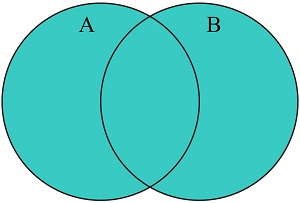
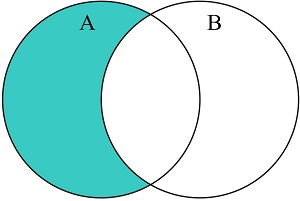
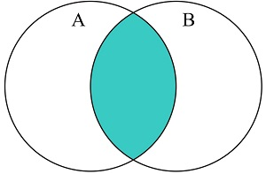
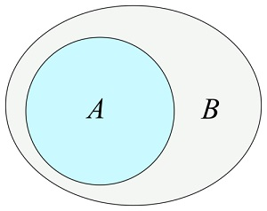

Um conjunto é uma coleção de valores exclusivos, isto
é, cada valor só pode existir uma vez no conjunto. Os valores podem ser
de qualquer tipo, podem ser valores primitivos ou objetos.
Um typeof de um conjunto retornará object.
Como criar conjuntos
É possível criar conjuntos:
- Passando uma matriz para
new Set()
-
Criando um conjunto vazio e usando
add() para adicionar
novos valores
new Set()
Passe uma matriz para o construtor new Set(), por exemplo:
// Criar o conjunto completo
const letras = new Set(["a","b","c"]);
// OU
// Criar o conjunto vazio
const letras = new Set();
// Adicionar valores ao conjunto criado
letras.add("a");
letras.add("b");
letras.add("c");
// OU
// Criar um conjunto vazio
const letras = new Set();
// Criar variáveis
const a = "a";
const b = "b";
const c = "c";
// Adicionar as variáveis ao conjunto criado
letras.add(a);
letras.add(b);
letras.add(c);
add()
Esse método adiciona um novo valor ao conjunto já criado, por exemplo:
letras.add("d");
letras.add("e");
Note que, se os valores adicionados com este método forem iguais aos
valores existentes, o valor não será adicionado.
Listar elementos do conjunto
Para listar os elementos do conjunto, use a declaração
for/of, por exemplo:
// Cria o conjunto
const letras = new Set(["a","b","c"]);
// Lista todos os elementos
let texto = "";
for (const x of letras) {
texto += x;
}
// Resultado: "abc"
has()
Retorna true se o valor especificado estiver no conjunto.
// Criar o conjunto
const letras = new Set(["a","b","c"]);
// O conjunto contém "d"?
resposta = letras.has("d");
// Resultado: false
forEach()
Chama uma função para cada elemento do conjunto.
// Criar o conjunto
const letras = new Set(["a","b","c"]);
// Listar todos os elementos
let texto = "";
letras.forEach (function(value) {
texto += value;
})
// Resultado: "abc"
values()
Retorna um objeto iterador com os valores de um conjunto.
// Exemplo 1
// Criar o conjunto
const letras = new Set(["a","b","c"]);
// Obter os valores
const meuIterador = letras.values();
// Listar os valores
let texto = "";
for (const entrada of meuIterador) {
texto += entrada;
} // Resultado: "abc"
// Exemplo 2
// Criar o conjunto
const letras = new Set(["a","b","c"]);
// Listar os valores
let texto = "";
for (const entrada of letras.values()) {
texto += entrada;
} // Resultado: "abc"
keys()
Retorna um objeto iterador com os valores de um conjunto.
Observação: um conjunto não tem chaves, então
keys() retorna o mesmo que values().
// Exemplo 1
// Criar o conjunto
const letras = new Set(["a","b","c"]);
// Criar o iterador
const meuIterador = letras.keys();
// Listar os elementos
let texto = "";
for (const x of meuIterador) {
texto += x;
}
// Exemplo 2
// Criar o conjunto
const letras = new Set(["a","b","c"]);
// Listar os elementos
let texto = "";
for (const x of letras.keys()) {
texto += x;
}
entries()
Retorna um objeto iterador com pares de [valor, valor] de um conjunto.
Observação: este método deveria retornar um par de
[chave, valor], mas como o conjunto não tem chaves, ele retorna [valor,
valor]. Isso torna o conjunto compatível com mapas.
// Exemplo 1
// Criar o conjunto
const letras = new Set(["a","b","c"]);
// Obter as entradas
const meuIterador = letras.entries();
// Listar as entradas
let texto = "";
for (const entrada of meuIterador) {
texto += entrada;
}
// Exemplo 2
// Criar o conjunto
const letras = new Set(["a","b","c"]);
// Listar as entradas
let texto = "";
for (const entrada of letras.entries()) {
texto += entrada;
}
Métodos lógicos
Em 2025, sete novos métodos lógicos foram adicionados ao JavaScript:
union()
Este método retorna um novo conjunto que contém elementos que estão em
um, em outro ou em ambos os conjuntos, isto é, a união de dois
conjuntos:

Exemplo:
const A = new Set(['a','b','c']);
const B = new Set(['b','c','d']);
const C = A.union(B); // Resultado: Set {'a', 'b', 'c', 'd'}
difference()
Este método retorna um novo conjunto que contém elementos que estão em
um conjunto, mas não no outro conjunto considerado, isto é, a diferença
entre os conjuntos:

Exemplo:
const A = new Set(['a','b','c']);
const B = new Set(['b','c','d']);
const C = A.difference(B); // Resultado: Set {'a'}
intersection()
Este método retorna um novo conjunto que contém os elementos que estão
em ambos os conjuntos considerados, isto é, a intersecção de dois
conjuntos:

Exemplo:
const A = new Set(['a','b','c']);
const B = new Set(['b','c','d']);
const C = A.intersection(B); // Resultado: Set {'b', 'c'}
isDisjointFrom()
Este método retorna true se um conjunto não tiver elementos
em comum com o outro:

Exemplo:
const A = new Set(['a','b','c']);
const B = new Set(['b','c','d']);
let answer = A.isDisjointFrom(B); // Resultado: false
isSubsetOf()
Este método retorna true se todos os elementos de um
conjunto também são elementos do outro conjunto considerado na
comparação, isto é, se um é subconjunto do outro:

Exemplo:
const A = new Set(['a','b','c']);
const B = new Set(['b','c','d']);
let answer = A.isSubsetOf(B); // Resultado: false
isSupersetOf()
Este método retorna true se todos os elementos nos
conjuntos considerados na comparação forem iguais, isto é, se um for o
supraconjunto do outro, ou o inverso do método acima:

Exemplo:
const A = new Set(['a','b','c']);
const B = new Set(['b','c','d']);
let answer = A.isSupersetOf(B); // Resultado: false
symmetricDifference()
Este método retorna um novo conjunto que contém elementos que estão ou
em um ou em outro dos conjuntos considerados na comparação, mas não em
ambos, isto é, a diferença simétrica entre os conjuntos:

Exemplo:
const A = new Set(['a','b','c']);
const B = new Set(['b','c','d']);
const C = A.symetricDifference(B); // Resultado: Set {'a', 'd'}
WeakSet
Um WeakSet é uma coleção de valors que devem ser objetos. Um WeakSet tem
referências fracas para seus valores. Alguns exemplos:
// Criar um WeakSet
let meuConjunto = new WeakSet();
// Criar uym objeto
let meuObj = {nome:"John", sobrenome:"Doe"};
// Adicionar o objeto ao WeakSet
meuConjunto.add(meuObj);
// meuObj está em meuConjunto?
let answer = meuConjunto.has(meuObj); // Resultado: true
OU
// Criar um WeakSet
let meuConjunto = new WeakSet();
// Criar um objeto
let meuObj = {nome:"John", sobrenome:"Doe"};
// Adicionar o objeto ao WeakSet
meuConjunto.add(meuObj);
// Excluir o objeto do WeakSet
meuConjunto.delete(meuObj);
// meuObj está em meuConjunto?
let answer = meuConjunto.has(meuObj); // Resultado: false
Coleta de lixo
O JavaScript emprega um mecanismo de gestão de memória conhecido como
Garbage Collection ("Coleta de lixo"). Suas funções primárias são:
- Garantir o uso eficaz de recursos de memória
-
Recuperar a memória ocupada por variáveis que já não estão em uso
- Impedir vazamentos de memória
Referências fracas
Diferente de um conjunto comum, um WeakSet não impede que seus valores
sejam considerados como "lixo". Se um valor (um objeto) não tiver
referências em um programa, ele pode ir para o lixo. Quando o valor é
coletado como lixo, é removido do WeakSet. Por exemplo:
// Criar um WeakSet
let meuConjunto = new WeakSet();
// Criar um objeto
let meuObj = {nome:"John", sobrenome:"Doe"};
// Adicionar o objeto ao WeakSet
meuConjunto.add(meuObj);
// Remove o objeto da memória
meuObj = null;
// Agora, o meuObj em meuConjunto será coletado como lixo
Os valores devem ser objetos
Valores primitivos não podem ser inclusos em um WeakSet, porque os
valores devem ser objetos. Esta restrição está
vinculada ao mecanismo de coleta de lixo; primitivos não são coletados
como lixo da mesma forma que objetos.
Rastreamento de objetos
Um WeakSet é similar a um conjunto, mas só armazena objetos, e somente
referências fracas a eles. Se não houver outras referências a um objeto,
ele será coletado automaticamente como lixo. Isso é útil para rastrear
os objetos sem armazenar dados adicionais (como contagens).
Por exemplo, vejamos como rastrear visitantes:
let texto = "";
// Criar um WeakSet para rastrear pessoas
const pessoas = new WeakSet();
// Objetos dos visitantes
const John = {nome:"John", idade:40};
const Paul = {nome:"Paul", idade:41};
const Ringo = {nome:"Ringo", idade:42};
const George = {nome:"George", idade:43};
// Rastrear visitas
track(Paul);
track(Ringo);
track(Paul);
// Função para rastrear visitantes
function track(visitante) {
if (pessoas.has(visitante)) {
texto += visitante.nome + " está visitando novamente.
";
} else {
pessoas.add(visitante);
texto += visitante.nome + ", idade" + visitante.idade +", está visitando pela primeira vez.
";
}
}
Porém, se ainda quiser uma contagem, tente usar um
WeakMap.
Limpeza automática
Se remover todas as referências a um objeto de visitante:
John = null;
// A entrada para John agora foi removida do WeakMap (pessoas)
WeakSets não são enumeráveis. Não é possível iterar seus valores com
loops for, com forEach() ou com
values(); não é possível acessar seu tamanho, já que eles
não têm essa propriedade.
Métodos de um WeakSet
Um WeakSet é pequeno, seguro para a memória e criado para rastrear
objetos de maneira privada e eficaz. Um WeakSet oferece alguns métodos:
| new WeakSet() |
Cria um novo objeto WeakSet |
| add(objeto) |
Adiciona um objeto a um WeakSet |
| delete(objeto) |
Remove um objeto de um WeakSet |
| has(objeto) |
Retorna true se um objeto existe em um WeakSet |
WeakSets não têm: uma propriedade de tamanho (size), um operador de
expansão (...), um método clear(), métodos de lógica
(union, difference, intersection, etc.) ou métodos de iteração (forEach,
keys, values, etc.). Isso é proposital: os objetos podem desaparecer na
coleta de lixo, então não faz sentido iterar sobre eles ou contá-los.